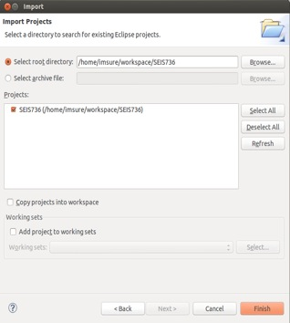
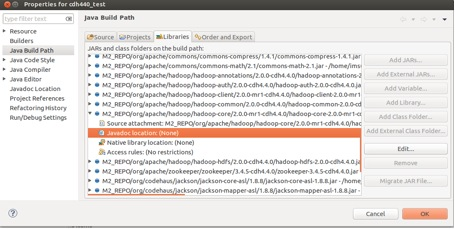
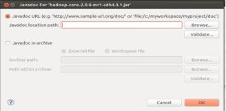

Using Maven to Setup an Eclipse Hadoop Development Environment
Shuo Yang 9/17/2013
Install Maven
First, open a shell terminal and check if Maven version 3 is already installed.
$ mvn -v
If it is not installed, enter the following command to install (make sure you have access to the Internet):
$ sudo apt-get install maven
After it is completely done, type in 'mvn -v' again, you might see the following information:
Apache Maven 3.0.4
Maven home: /usr/share/maven
Java version: 1.6.0_27, vendor: Sun Microsystems Inc.
Java home: /usr/lib/jvm/java-6-openjdk-amd64/jre
Default locale: en_US, platform encoding: UTF-8
OS name: "linux", version: "3.8.0-30-generic", arch: "amd64", family: "unix"
Install Eclipse
To install Eclipse, enter the following command (make sure you have access to the Internet): $ sudo apt-get install eclipse
Integrate Maven with Eclipse
Change your working directory to Eclipse's workspace. Assume it is under you home directory. $ cd ~/workspace
Enter the following command (make sure you have access to the Internet):
$ mvn archetype:generate -DgroupId=edu.stthomas.gps -DartifactId=SEIS736 \ -DarchetypeArtifactId=maven-archetype-quickstart -DinteractiveMode=false
(Note: The backslash at the end of the first line means the command is not completed, we often use it for a long command, so if you want to enter the command on two lines, use it. But if you type the command on one line, you should not type backslash.)
After it is done, there will be a directory called SEIS736 created under the current directory. Go into this directory:
$ cd SEIS736
Enter the following command (make sure you have access to the Internet):
$ mvn -Declipse.workspace=/home/username/workspace eclipse:configure-workspace \ eclipse:eclipse
(Note: remember to replace 'username' with your real user name)
Replace the pom.xml file (under SEIS736) with the one at the bottom of this document and enter this command (make sure you have access to the Internet):
$ mvn eclipse:clean eclipse:eclipse
Set up M2_REPO environment variable
Go to your home directory:
$ cd ~
Open .bashrc file with a text editor, and add the following line to the end of the file, then save and quit.
export M2_REPO=$HOME/.m2/repository
Enter the following command:
$ source .bashrc
Import project into Eclipse
Start eclipse, and select
File->Import->Existing Projects Into Workspace
Choose SEIS736 and import it into Eclipse:
You can now add your source files to SEIS736->src/main/java->edu.stthomas.edu and all the Hadoop references should resolve.
###Add javadoc for Hadoop(Note: This manual step is currently necessary because Cloudera is missing the Javadoc JAR for hadoop-core.)
Go to File->Properties, select M2_REPO/org/apache/hadoop/hadoop-core/2.0.0-mr1-cdh4.4.0/hadoop-core-2.0.0-mr1-cdh4.4.0.jar
 Double click Javadoc location:
Enter http://archive.cloudera.com/cdh4/cdh/4/hadoop/api/ into Javadoc location path, then click OK.
###Compile the project Under your project directory SEIS736, enter the following command: ``` $ mvn package ``` Then in Eclipse, right click SEIS736 and select Refresh. Then you will see a jar file called SEIS736-1.0.jar generated under target directory. ###Upload jar file to the server Under SEIS736, create a shell script called upload.sh with the following two lines of code: ``` #!/bin/sh scp -r ~/workspace/SEIS736/target/SEIS736-1.0.jar \ username@hc.gps.stthomas.edu:/home/username/ ``` *(Note: the backslash here means the same thing as we have mentioned previously.)* Then enter the following command: ``` $ mvn install ```